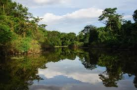
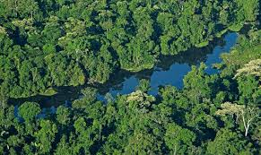

RESUMEN |
El Bosque Amazónico, ubicado principalmente en América del Sur, es el bosque tropical más grande del mundo. Ocupa cerca de 5.5 millones de kilómetros cuadrados, abarcando territorios de Brasil, Perú, Colombia, Venezuela, Ecuador, Bolivia y Guyana, entre otros países. La Amazonía es vital para la regulación del clima global, pues produce aproximadamente el 20% del oxígeno terrestre y almacena enormes cantidades de carbono. Su biodiversidad es una de las más impresionantes del mundo, con miles de especies de plantas, animales e insectos. Al igual que otros bosques tropicales, está estructurado en capas verticales, pero su tamaño y densidad lo convierten en una de las mayores reservas de vida silvestre del planeta. El impacto de la deforestación y el cambio climático está amenazando gravemente este ecosistema. |
 |
ANIMALES REPRESENTATIVOS |
Anaconda: La serpiente más grande del mundo por peso y longitud. Puede superar los 8 metros de largo y se encuentra en las áreas pantanosas y ríos amazónicos, cazando presas grandes como capibaras o caimanes. Delfín Rosado del Amazonas (Boto): Este delfín de agua dulce tiene una característica coloración rosada y se adapta perfectamente a la vida en los ríos turbios de la Amazonía. Águila Harpía: Una de las aves rapaces más grandes y poderosas del mundo. Se alimenta principalmente de monos y perezosos, y habita en el dosel de los árboles. Oso Hormiguero Gigante: Con su larga lengua, este mamífero se alimenta de hormigas y termitas, y es fácilmente reconocible por su pelaje largo y distintivo. Mono Araña: Este primate es extremadamente ágil y puede balancearse entre los árboles con facilidad gracias a su cola prensil. Viven en grupos sociales y tienen una dieta principalmente frugívora. |
 |
DOCUMENTAL |